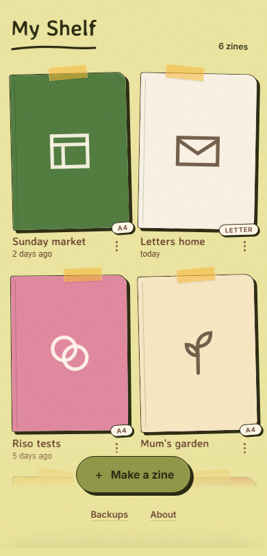
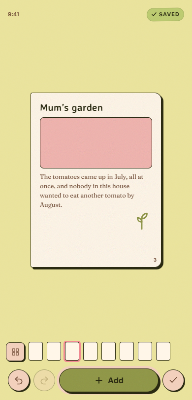
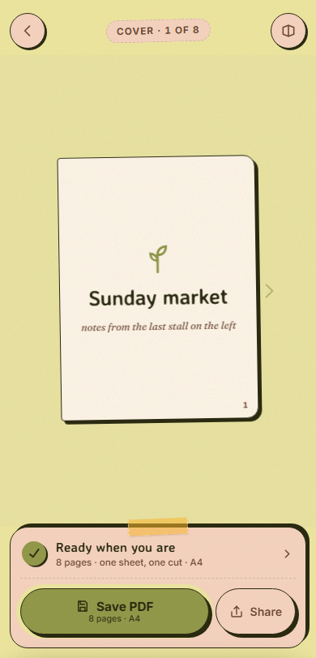

A tiny print studio for Android
Make a littlezine.
Bring together photos, words, and simple art. Zinely turns them into an eight-page booklet you can print, cut, fold, and pass on.
Zinely at a glance
- Works offline
- No account
- No analytics
- Android 7.0+
Public beta: this APK installs outside Google Play. Back up your zines before updating or uninstalling. If you use Zinely 0.8.0 or older, preserve your work before uninstalling—read the installation notes.
See the whole journey
A working zine desk, in your pocket.
A look inside Zinely, with sample zines made for this page.



From phone to paper
Eight pages. One sheet. Yours.
-
Add what matters
Bring in photos, write a few words, and add a little art.
-
Make every page yours
Move, resize, reframe, and arrange all eight pages on your phone.
-
Print, cut, and fold
Save a home-print-ready PDF. Zinely puts every page in the right place for folding.
Clear a little space on your desk
How to fold a mini zine.
One printed sheet, a pair of scissors, and a few good creases. Take one step at a time, at your own pace.
Start with: your Zinely PDF printed on one side of A4 or US Letter paper. A blank sheet works for practice, too.
Dashed line = creaseThick edge = folded edgeRed line + stop dot = cutArrow = movement
-
Fold lengthways
Lay the sheet landscape, printed side down.Bring the bottom long edge up to the top edge.Crease firmly and keep it folded.
-
Fold in half again
Keep the long strip lying across your desk.Bring its right short edge over to the left.Press the new fold flat.
-
One more fold
Fold the small rectangle in half once more.Bring the right edge over to the left.Press all the creases firmly.
-
Open it all out
Unfold the sheet completely.Lay it landscape again.Check for eight panels: four across, two down.
-
Fold across the middle
Bring the full sheet’s right short edge over to the left.This fold goes the other way from your first fold.Keep the folded edge on your right.
-
Make one small cut
Start at the folded right edge; cut left along the middle crease.Cut through both layers, stopping halfway across.Stop at the dot. Do not cut all the way through.
-
Open up again
Unfold the sheet and lay it flat.The slit crosses only the two middle panels.Both outer panels must stay joined.
-
Return to the long fold
Fold lengthways again along the first crease.Keep the printed pages on the outside.Hold the strip with the slit along its folded top edge.
-
Push the ends together
Hold the short ends and gently push them inward.Let the slit open into a diamond.Keep pushing until four panels meet in a cross.
-
Fold into a little book
Wrap the panels around each other, front cover on top.Flatten the spine with your fingers.Your eight-page zine is ready to share.
Motion starts only when you ask. Pause at any point.
Made by you. Ready to pass on.
About Zinely
Small enough to make. Real enough to keep.
Zinely started with a simple wish: to make something personal without making it complicated. It’s an Android app for turning photos, words, and simple art into eight-page mini zines—no account, no feed, and no uploading your work.
Make it on your phone. Print one sheet. Cut, fold, and pass it on.
Zinely is an independent project by Aastra, a two-person team. We’d love to hear what works, what gets in your way, and what could be better.
A short Google Form: only your message is required; type and reply email are optional. Prefer email, or want to send a screenshot? Write to aritr.g06@gmail.com. Please hide personal information first. Identifiable feedback is deleted within 90 days; read how feedback is handled.
Accessibility
This website is designed toward WCAG 2.1 Level AA, with keyboard access, visible focus, semantic structure, readable contrast, responsive reflow, and reduced-motion support. If something gets in your way, email aritr.g06@gmail.com.
Read the privacy policyOpen notebook
What changed, and what might come next.
Ready when you are
Start making something small.
Zinely 0.9.0-beta.4-r3 is free to test on Android 7.0 and newer.